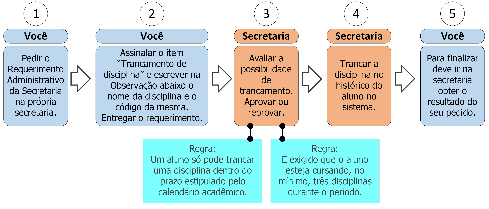

13. Trancamento de disciplina

13.1 Descrição
Após o início do período letivo você pode trancar disciplinas nas quais se inscreveu. Para isso deve seguir os seguintes passos:
- A. Peça o Requerimento Administrativo da Secretaria;
- B. Assinale o item “Trancamento de disciplina” e escreva no campo Observação o nome da disciplina que deseja trancar e seu código;
- C. Entregue o requerimento;
- D. A secretaria verificará se não há irregularidades que impeçam o trancamento (ver regras 1 e 2 na seção 13.3);
- E. A Secretaria trancará a disciplina do seu histórico escolar;
- F. Vá à secretaria e procure saber sobre o resultado do seu requerimento (ver regra 3 na seção 13.3).
- Condição: Este processo deve ser utilizado apenas para situações extraordinárias. O trancamento em casos usuais deve ser realizado via Internet no Portal do Aluno.
13.2 Documentos necessários
Nenhum.
13.3 Regras
- 1. Período de trancamento: O trancamento de disciplina só pode ser feito dentro do prazo estipulado pelo Calendário Acadêmico do período em questão.
- 2. Mínimo de disciplinas: Um aluno deve estar matriculado em três disciplinas por período letivo no mínimo.
- 3. Prazo de efetivação: A Secretaria tem até 5 dias úteis efetivar o trancamento de disciplina.